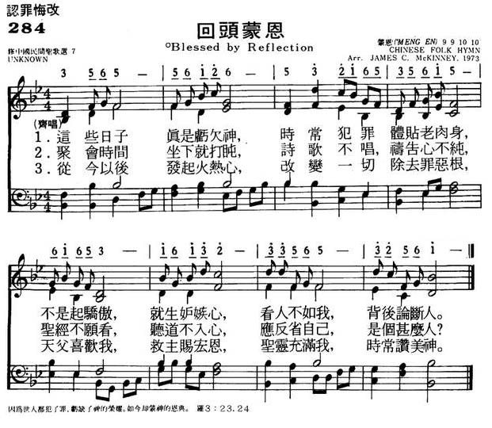

|
|
回头蒙恩
|
|
|
1.这些日子真是亏欠神，时常犯罪，体贴老肉身；
|
|
https://www.mred365.cn/szxg/7287.html

|
|
|
|
|
-

-
回头蒙恩 [Midi]
LX1303
Blessed By Reflection
284回头蒙恩
[華]
中国的教会，在一个相当长的时间里遭到迫害，传道人被抓，教会被迫停止聚会，下面这首诗载于家庭聚会使用的圣诗集《赞美诗歌》，反映了教会和信徒受迫害的情况，以及牧者和信徒的心情。
凄风苦雨
（《赞美诗歌》274）
1．多少年凄风苦雨，多少阵狂风暴雨，风雨里不见了神家的院宇。祭坛上撒下了亚伯的心血。神的葡萄树啊，你在哪里；神的香柏树啊，你在哪里？你在哪里？你在哪里？
2.一声声小羊哀鸣，一个个离羊伤心。草场上失落了耶和华的羊吗，凄风里洒下了忧伤的眼泪。羊的好牧人啊，你在哪里？羊的护卫杆啊，你在哪里?……
3．梦里的耶路撒冷，泪里的耶路撒冷，寻找你，寻你在祭坛的火中；寻找你，寻你在十架的钉洞。走出流泪谷啊，还有几程？走回天上家啊，还有几程？还有几程？遂有几程？
这首诗的感情，若不是亲身经历过的人，是写不出来的。特别是第三段，描写失落的羊群，寻找神的家，历尽艰险，要在「祭坛的火中」去找；要在「十字架的钉洞」里去找。因为在那些日子里，人们的虔诚只能隐藏在内心，红色风暴底下，宗教活动连想转入地下都不可能。在那种形势下，看不到一线光明和希望，这些苦难，不知道还要熬到何时；甚至渴望回天家，也不知道还有多少路程要走。这是多么的无奈和悲哀呀！
圣诗里不乏借描写美丽的大自然来歌颂赞美神的内容，但陈泽民的杂言诗「神工妙笔歌」，却从描写景物到把自己熔入，想象到参与神创造世界的伟大事业，直到主再来，让新天新地实现于人间，这样气魄的圣诗不很多。
媒體